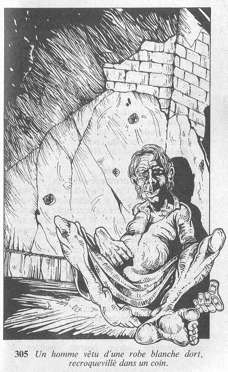

La porte est fermée par un verrou qui peut s'ouvrir de l'extérieur. Vous tournez le verrou, vous ouvrez la porte et avec méfiance, vous jetez un coup d'oeil dans la pièce. Les murs en sont nus, et elle n'est meublée que d'une table et d'une chaise. Un homme vêtu d'une robe blanche dort, recroquevillé dans un coin.  Il s'éveille alors que vous vous avancez. « Oh, bonjour, dit-il : je suppose que vous êtes venu pour moi, n'est-ce pas ? » Allez-vous lui répondre oui, ou non ?